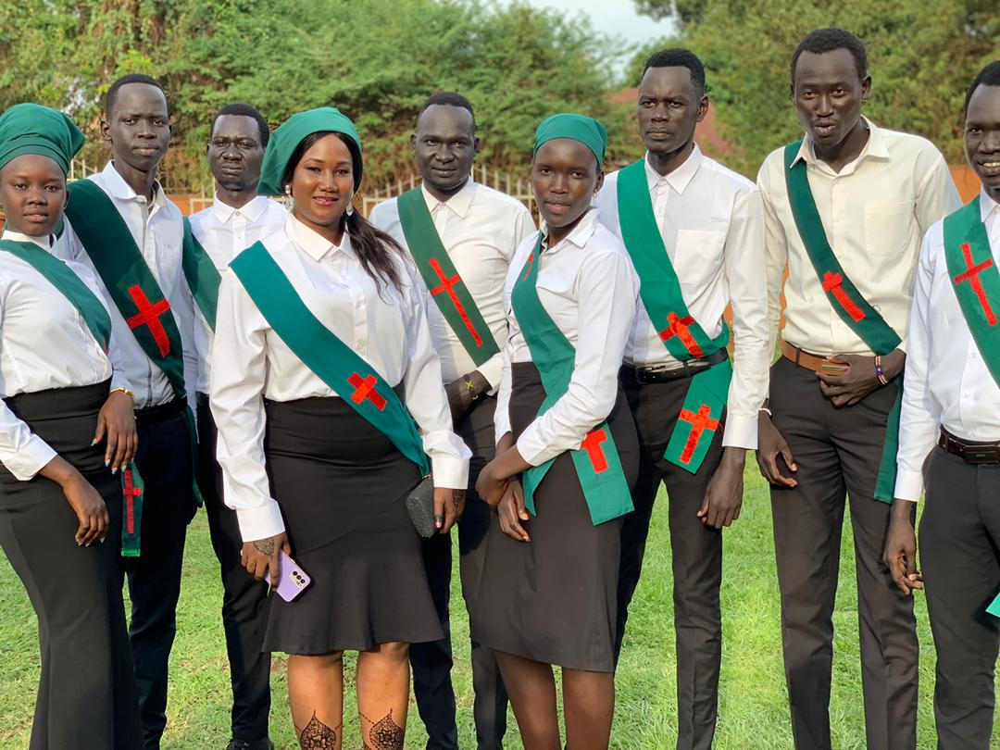
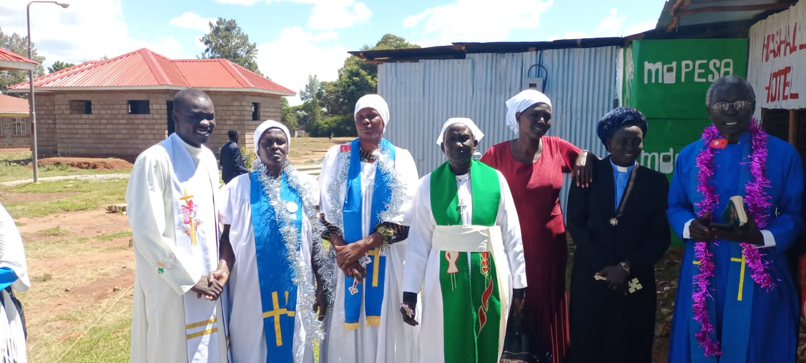
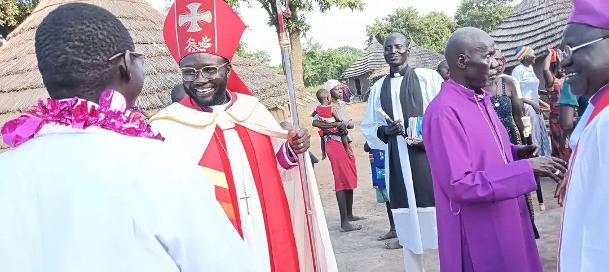
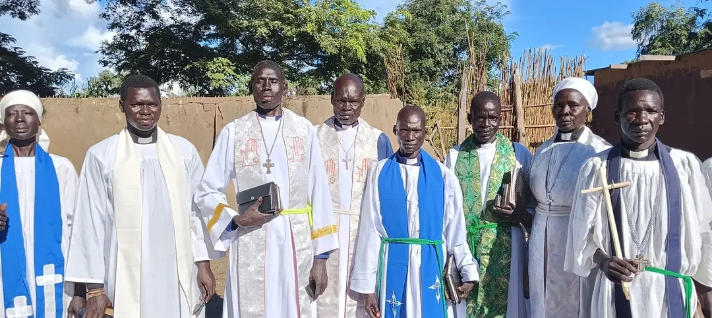
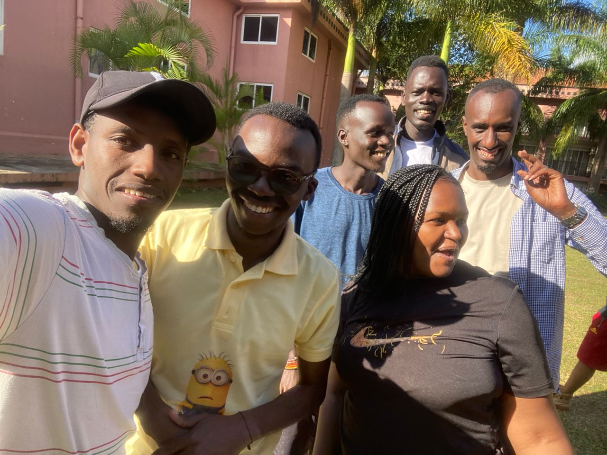
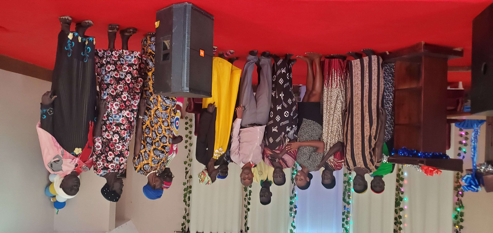

Diocese News & Updates
Stay informed about the latest events, announcements, and happenings across Akot Diocese

Bishop's Visit to Ramdor Archdeaconry
Rt. Rev. Dr. Stephen Amum completed a three-day pastoral visit to Ramdor Archdeaconry, confirming 150 new members and dedicating a new church building.
Read More →
Annual Youth Conference 2025
Over 500 young people gathered for the annual youth conference under the theme "Rise and Shine." The event featured worship, workshops, and leadership training.

New Church Dedication in Paloch
St. Andrew's Church in Paloch Archdeaconry was officially dedicated in a joyful ceremony attended by over 300 worshippers.

Mothers' Union Empowerment Workshop
Women from across the diocese gathered for a three-day workshop on economic empowerment and family ministry.

Ordination of New Priests
Eight deacons were ordained to the priesthood in a solemn service at Akot Cathedral.

Community Health Outreach
The diocesan health department organized a free medical camp serving over 1,000 people in Atiaba Archdeaconry.

Interfaith Peace Conference
Religious leaders from across South Sudan gathered in Akot to discuss peace and reconciliation initiatives.